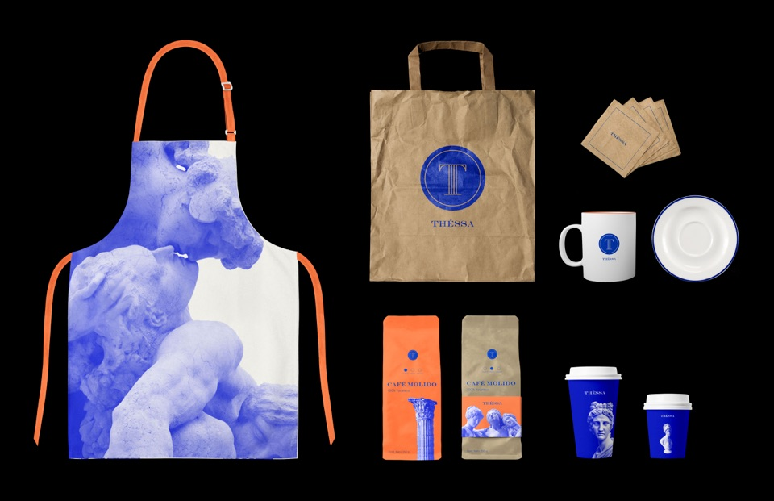
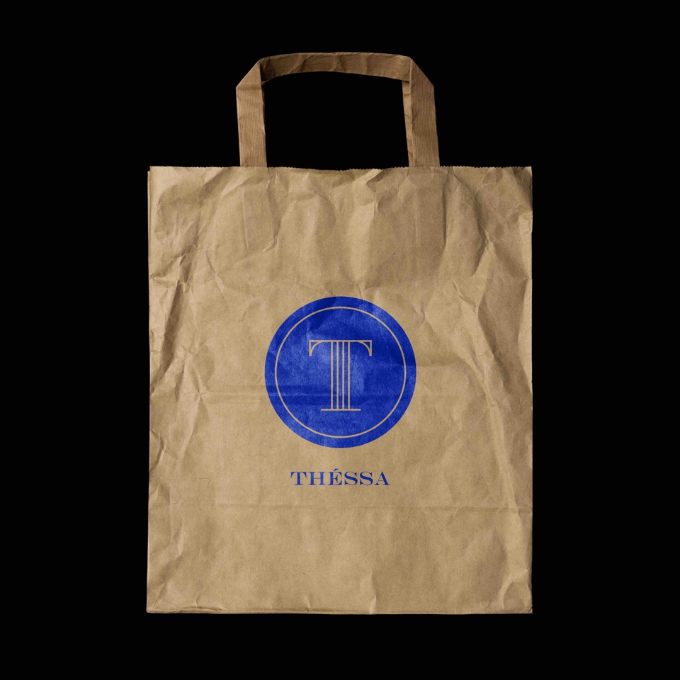
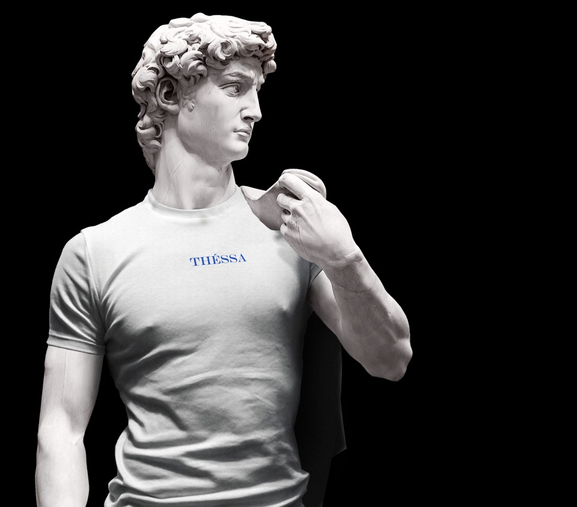

PROYECTO PERSONAL - AÑO - 2019
Thessaloniki o Tesalónica es una ciudad portuaria de Grecia en el golfo
de Tesalónica, en el Mar Egeo. Hace muchos años, mi familia viajó de
Thessaloniki a México, esto me inspiró para crear THESSA. Una cafetería
con influencias griegas y mexicanas, para crear un proyecto de identidad
propia, incluyendo logos, empaques, tarjetas de presentación, y mucho
más.


